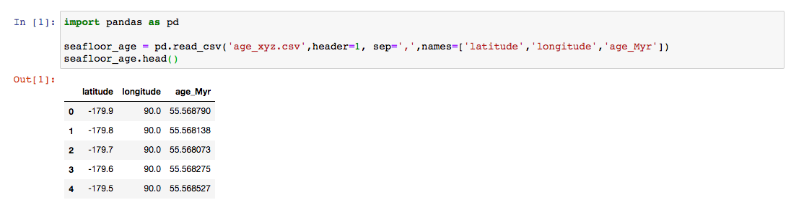

2.1 Data Input/Output (I/O)¶
Goals: Introduce methods for loading data from a text file using python.
Outline:
Reading data files
Writing data files
Additional Assigned Reading (or Review)¶
Data 8 textbook “Computational and Inferential Thinking: The Foundations of Data Science” By Ani Adhikari and John DeNero Chapter 3 Programming in Python, Chapter 4 Data Types, Chapter 5 Sequences, and Chapter 6 Tables. This should overlap with your assigned reading for Data 8.
Watch this video about reading and writing text format data

Know what the data is¶
The first thing to do is familiarize yourself with the data. What are the columns? How many rows are there?
In general the data we will use for this class will be saved as text files. These files will be larger than some other file types, but they are human readable! Use the text editor of your choice and open the text file. Make sure it’s the file you want.
Take note of:
number of header rows
number of columns and rows
are they string/integer/float types
what is the delimiter
Usually this will be straight foward. For example:
This file has one row of header information. There are 3 columns: Latitude, Longitude, and Age. The elements in each row are separated by commas. Each column has float (a number with decimal points) type data.
Or slightly more complicated, but still do-able:
This file has 9 rows of header information. There are 13 columns. The elements in each row are separated by tabs. The columns are a mix of strings, floats, and integers.
Sometimes you’ll mess up and get something crazy.
It’s much better to catch this early than to struggle trying to troubleshoot.

Loading Data¶
The functions we will use most for reading and parsing data in text format are np.loadtxt,pd.read_csv, and pd.read_table.
They are similar except pd.read_csv has a default comma delimiter and pd.read_table has tab ('\t') as its default delimiter.
The syntax will look something like: pd.read_csv('filename.csv',header=2, sep=',',names=['Date','Time','Location']). There are other argument options that you may need to use.
Source: Python for Data Analysis, McKinney
For example the first file above can be loaded into a DataFrame name seafloor_age by calling pd.read_csv as seafloor_age = pd.read_csv('age_xyz.csv',header=1, sep=',',names=['latitude','longitude','age_Myr']).

Writing Data to Text Format¶
Often once you have completed your data wrangling and analysis you want to save your data. Unless you need to save in a software-specific file format or you have thousands of rows, you’ll want to save in text format. Again so they are human readable. A simple way to do this is use the DataFrame method to_csv and setting the path and filename.
This will save a file named ‘seafloor_age_new.csv’ in the same directory as your notebook. You can set a different file path instead. seafloor_age.to_csv('data/seafloor_age_new.csv') would make a directory named ‘data’ and place your new file there.